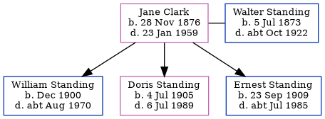

Jane Elizabeth Standing (née Clark) 1876 - 1959
[ Home ] | [ Calendar ] | [ Surnames Index ] | [ Errors ] | [ Family History ]Jane Clark, the wife of Walter William Standing (the third cousin twice-removed on the father's side of Nigel Horne), was born in Cranbrook, Kent, England on 28 Nov 18761,2,3 and married Walter (a laundry foreman with whom she had 3 children: William James, Doris Elizabeth and Ernest Henry) at Christ Church, Church Road, Kilndown, Kent, England on 12 Nov 18985.
During her life, she was living at Lansdowne Road, Charlton, London, England on 31 Mar 19011; and at 90 Charlton Lane in Charlton on 2 Apr 19116.
She died on 23 Jan 1959 in Charlton4.
Children
- William James was born in Dec 1900
- Doris Elizabeth was born on 4 Jul 1905
- Ernest Henry was born on 23 Sept 1909
Citations
- 1901 England, Wales & Scotland Census - Findmypast (was age 24 and the wife of the head of the household)
- England & Wales births 1837-2006 - Findmypast
- Kent Marriages And Banns - Findmypast
- England & Wales deaths 1837-2007 - Findmypast
- Kent Marriages - Findmypast
- 1911 Census for England & Wales - Findmypast (was age 34 and the wife of the head of the household)
Media
England & Wales deaths 1837-2007 - BMD/D/1959/1/AZ/001287/020
Kent Marriages - PRS/FHS/KENT/MAR143/001400/B
Kent marriages and banns - PRS/KENT/MAR/0027466/2
Kent, Canterbury Archdeaconry banns - GBPRS/CANT3/BANNS/001097/2
England & Wales births 1837-2006 - BMD/B/1876/4/AZ/000104/156
Family Tree
Map
Generated by ged2site. Last updated on Jul 3, 2024
Known Issues
No records of living with anyone
1939 UK register information missing